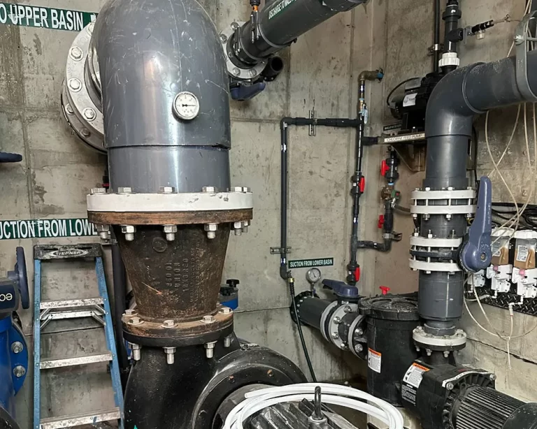

Essential Pond Maintenance for Utah's Unique Climate
Maintaining a pond in Utah requires a specialized approach due to our extreme temperature variations, high altitude, and arid climate. I've maintained hundreds of ponds across Utah and developed proven maintenance strategies that work specifically for our environment. This guide will teach you everything you need to know to keep your water garden healthy and beautiful throughout all seasons.
Why Utah Pond Maintenance Is Different
Utah's unique climate presents specific challenges that require specialized maintenance approaches:
- Temperature extremes: Summer highs over 100°F and winter lows below 0°F
- High altitude: Increased UV radiation and faster water evaporation
- Arid climate: Low humidity and rapid water loss
- Seasonal variations: Dramatic changes between seasons
- Water quality challenges: Hard water and mineral buildup
Daily Maintenance Checklist
These daily tasks take only 5-10 minutes but are crucial for pond health:
- Check water level: Top off with dechlorinated water if needed
- Observe fish behavior: Look for signs of stress or illness
- Check equipment: Ensure pumps and filters are running properly
- Remove debris: Skim leaves and floating debris
- Monitor water clarity: Note any changes in appearance
Weekly Maintenance Tasks
Weekly maintenance prevents problems before they become serious issues:

Water Quality Testing
Regular water testing is essential for maintaining healthy pond conditions:
- pH levels: Test weekly, maintain between 6.8-8.2 for Utah ponds
- Ammonia levels: Should be 0 ppm to prevent fish stress
- Nitrite levels: Keep below 0.5 ppm for fish health
- Nitrate levels: Maintain below 40 ppm to prevent algae growth
- Water hardness: Test monthly, Utah water is typically hard
Equipment Maintenance
Proper equipment care ensures reliable operation and extends lifespan:
- Clean pump intakes: Remove debris and algae buildup
- Check filter media: Clean or replace as needed
- Inspect UV clarifiers: Clean quartz sleeves monthly
- Test electrical connections: Ensure all connections are secure
- Lubricate moving parts: Apply appropriate lubricants
Plant Care
Aquatic plants require regular attention to maintain pond balance:
- Prune overgrowth: Remove excess plant material
- Fertilize as needed: Use pond-specific fertilizers
- Check for pests: Remove any unwanted insects
- Divide overcrowded plants: Prevent root binding
- Remove dead foliage: Maintain clean appearance
Monthly Deep Cleaning
Monthly deep cleaning prevents buildup and maintains optimal conditions:
Pond Bottom Cleaning
Regular bottom cleaning prevents harmful buildup:
- Remove sludge: Use pond vacuum or manual cleaning
- Clean gravel: Rinse gravel and decorative stones
- Check liner condition: Inspect for damage or wear
- Clean waterfall features: Remove algae and mineral deposits
- Inspect plumbing: Check for leaks or blockages
Filter System Maintenance
Proper filter maintenance ensures clean, healthy water:
- Clean mechanical filters: Remove debris and rinse media
- Replace biological media: As recommended by manufacturer
- Check filter flow rates: Ensure proper circulation
- Clean filter housings: Remove algae and mineral deposits
- Inspect seals and gaskets: Replace if damaged

Seasonal Maintenance Schedule
Utah's four distinct seasons require specific maintenance approaches:
Spring Maintenance (March-May)
Spring preparation sets the foundation for a healthy growing season:
- Remove winter covers: Clean and store properly
- Start equipment gradually: Test pumps and filters
- Clean entire pond: Remove winter debris and sludge
- Test water parameters: Adjust as needed for spring
- Introduce beneficial bacteria: Jump-start biological filtration
- Prune winter-damaged plants: Remove dead foliage
- Check fish health: Monitor for winter stress
- Begin feeding schedule: Start with small amounts
Summer Maintenance (June-August)
Summer requires extra attention due to high temperatures and evaporation:
- Monitor water levels daily: Add water as needed
- Check water temperature: Keep below 80°F for fish health
- Increase aeration: Add air stones if needed
- Control algae growth: Use UV clarifiers and barley straw
- Feed fish appropriately: Adjust feeding for temperature
- Provide shade: Add floating plants or shade structures
- Clean filters weekly: Increased organic load
- Monitor plant growth: Prevent overgrowth
Fall Maintenance (September-November)
Fall preparation is crucial for winter survival:
- Remove falling leaves: Use netting or daily skimming
- Reduce feeding: Gradually decrease as temperatures drop
- Clean thoroughly: Remove summer debris
- Prepare winter equipment: Install heaters and deicers
- Trim plants: Remove dead foliage
- Test water quality: Ensure optimal conditions
- Check fish health: Ensure they're ready for winter
- Install covers: Protect from falling debris
Winter Maintenance (December-February)
Winter maintenance focuses on survival and equipment protection:
- Keep hole in ice: Use deicers or aerators
- Monitor equipment: Ensure heaters and pumps work
- Check water level: Maintain proper depth
- Remove snow from covers: Prevent collapse
- Test water quality monthly: Monitor for issues
- Inspect fish occasionally: Look for signs of stress
- Plan spring maintenance: Order supplies and equipment
- Document any issues: Note problems for spring repair
Water Quality Management
Maintaining proper water quality is the foundation of successful pond maintenance:
pH Management
Utah's hard water affects pH levels and requires careful management:
- Test pH weekly: Use reliable test kits
- Maintain 6.8-8.2 range: Ideal for most pond life
- Use pH buffers: Stabilize fluctuations
- Monitor after water changes: pH can shift
- Consider water source: Municipal vs. well water differences
Algae Control Strategies
Effective algae control requires multiple approaches:
- UV clarifiers: Kill free-floating algae
- Barley straw: Natural algae inhibitor
- Beneficial bacteria: Compete with algae for nutrients
- Proper plant balance: 60-70% plant coverage
- Reduce feeding: Minimize excess nutrients
- Regular cleaning: Remove organic debris
- Shade structures: Reduce sunlight penetration
- Water circulation: Prevent stagnant areas
Equipment Maintenance Guide
Proper equipment maintenance ensures reliable operation and extends lifespan:
Pump Maintenance
Regular pump maintenance prevents failures and ensures proper circulation:
- Clean intake screens: Remove debris weekly
- Check impeller: Remove obstructions monthly
- Inspect seals: Replace if leaking
- Test flow rates: Ensure proper circulation
- Lubricate bearings: Use appropriate lubricants
- Check electrical connections: Ensure secure connections
- Monitor noise levels: Unusual sounds indicate problems
- Clean pump housing: Remove algae and mineral deposits
Filter System Care
Proper filter maintenance ensures clean, healthy water:
- Mechanical filters: Clean weekly, replace media as needed
- Biological filters: Never clean completely, preserve bacteria
- Chemical filters: Replace activated carbon monthly
- UV clarifiers: Clean quartz sleeves monthly
- Check flow rates: Ensure proper water movement
- Inspect seals: Replace damaged gaskets
- Clean filter housings: Remove buildup
- Test water quality: Monitor filter effectiveness
Common Problems and Solutions
Understanding common issues helps prevent and resolve problems quickly:
Water Quality Issues
Address water quality problems promptly to prevent fish stress:
- Cloudy water: Check filters, add beneficial bacteria
- Green water: Install UV clarifier, reduce feeding
- High ammonia: Check fish load, improve filtration
- Low oxygen: Add aeration, reduce fish population
- pH fluctuations: Use pH buffers, test water source
Equipment Problems
Quick diagnosis prevents equipment failures:
- Pump not working: Check power, clean intake, inspect impeller
- Low flow rate: Clean filters, check for blockages
- Leaking connections: Tighten fittings, replace seals
- Electrical issues: Check GFCI outlets, inspect wiring
- Noisy operation: Clean impeller, check bearings
Professional Maintenance Services
While regular maintenance can be done by pond owners, professional services provide expertise and convenience:
When to Call Professionals
Professional help is recommended for these situations:
- Major equipment repairs: Pump or filter replacement
- Water quality emergencies: Fish health issues
- Seasonal deep cleaning: Annual comprehensive maintenance
- System upgrades: Adding new equipment or features
- Diagnostic services: Complex problem identification
Maintenance Service Packages
Professional maintenance packages provide comprehensive care:
- Weekly maintenance: Regular cleaning and monitoring
- Monthly deep cleaning: Comprehensive system maintenance
- Seasonal preparation: Spring startup and winter preparation
- Emergency services: 24/7 problem resolution
- Water quality management: Professional testing and treatment
Ready to Master Pond Maintenance?
Contact Utah Water Gardens for professional maintenance services or consultation to keep your pond healthy and beautiful year-round.
Get Professional Help